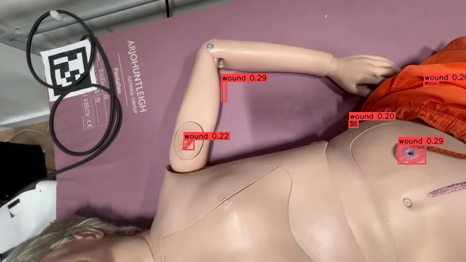
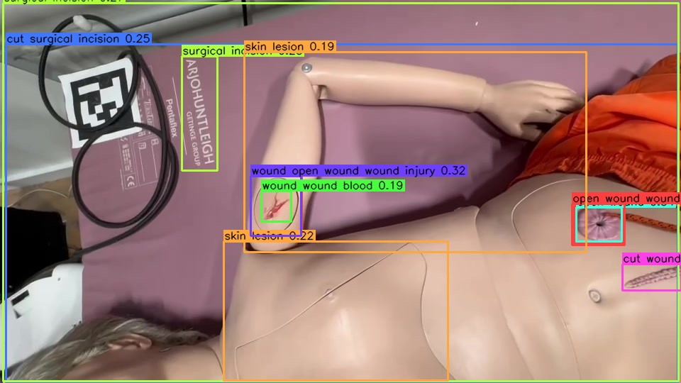
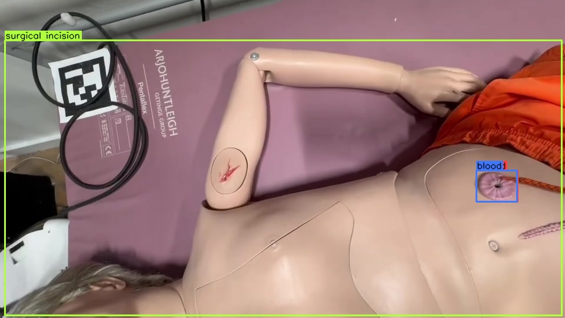
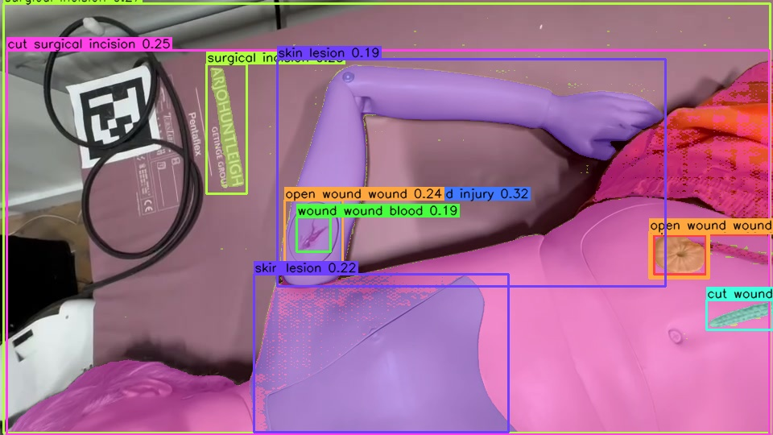
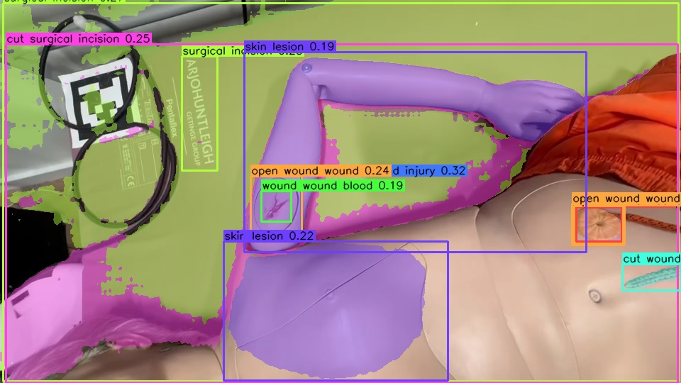
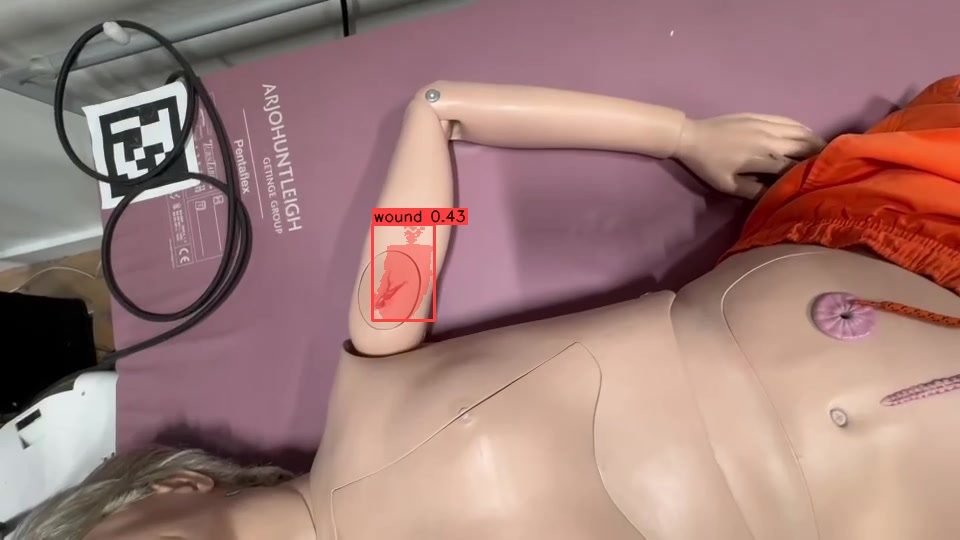
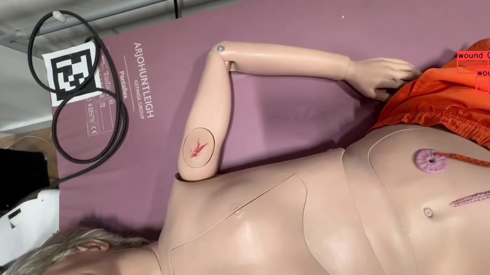
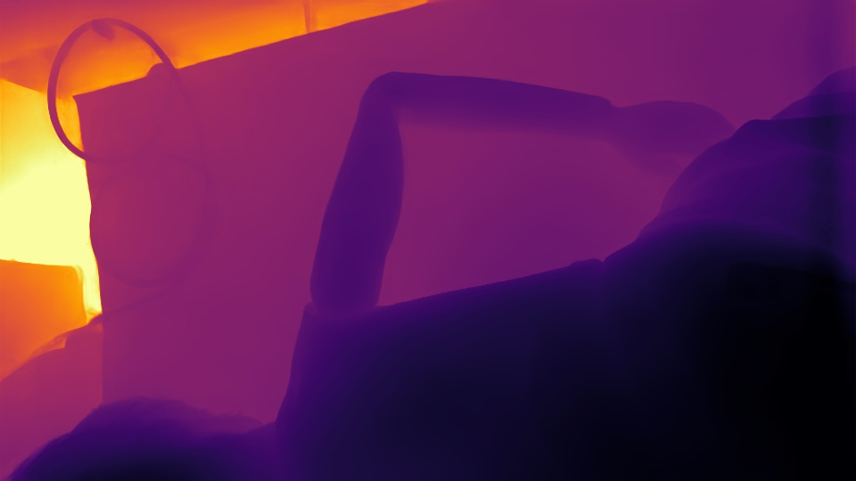
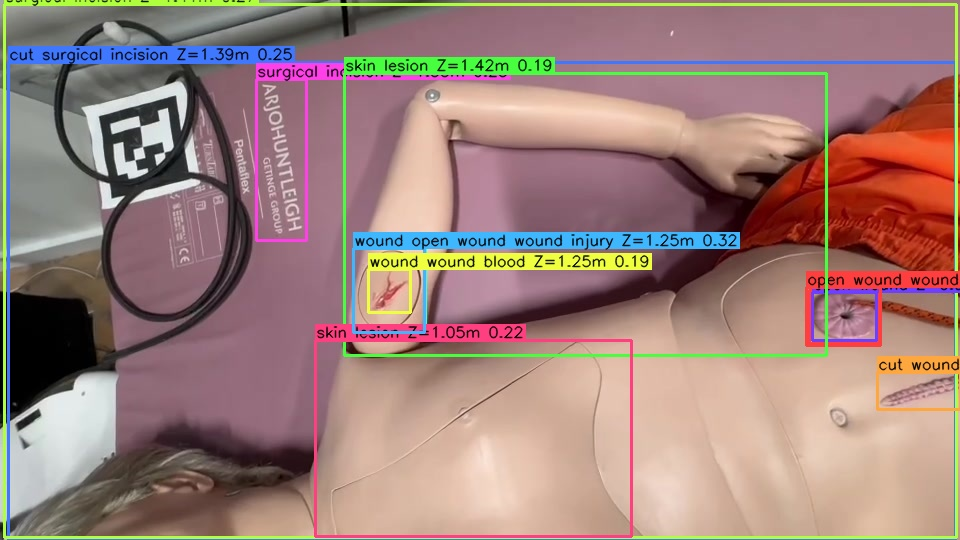

Wound detection methods17 pipelines on the hero frame (frame_00026.jpg)
Classical Hand-tuned colour heuristics — no learning, runs on CPU.

Open-vocab box Zero-shot text-prompted detectors: type the word “wound”, get boxes.




Wound mask Pixel-accurate wound masks (box-prompted SAM / MedSAM / semantic / dedicated).




Class-agnostic + filter Segment everything, then keep regions that look like a wound.

Supervised Closed-vocabulary models trained on fixed label sets.


Side-by-side comparisonsparse overlays forward-filled, ~8 fps
Pose & posturedense 80-frame overlays @30 fps
Dominant posture (MediaPipe): lying (89% of frames classified) · distribution: lying 69%, sitting 22%, standing 8%.
YOLO11-Pose (2D)
29% det
41.1 fps
0.55 conf
ViTPose (2D)
42% det
25.1 fps
0.67 conf
MediaPipe BlazePose (2D+3D)
85% det
19.3 fps
0.53 conf
NLF (3D mesh)
62% det
2.5 fps
0.34 conf
All metricsparsed from 19 results/_metrics/*.json · click a header to sort
| Method | Name | Output | Det rate | Dets/fr | Conf | FPS | ms/fr | VRAM MB | Status | Weights |
|---|---|---|---|---|---|---|---|---|---|---|
| 00_classical_cv | Classical CV (Lab redness/blood) | box+mask (color) | 95% | 7.8 | 0.27 | 308.4 | 3 | 0 | ok | n/a (classical) |
| 10_gdino | Grounding DINO (open-vocab box) | open-vocab 2D box | 98% | 5.4 | 0.24 | 7.2 | 139 | 2267 | ok | IDEA-Research/grounding-dino-base |
| 11_owlv2 | OWLv2 (open-vocab box) | open-vocab 2D box | 92% | 3.6 | 0.13 | 12.9 | 78 | 809 | ok | google/owlv2-base-patch16-ensemble |
| 12_owlvit | OWL-ViT (open-vocab box) | open-vocab 2D box | 1% | 0.0 | 0.08 | 78.7 | 13 | 636 | ok | google/owlvit-base-patch32 |
| 13_yolo_world | YOLO-World v2 (open-vocab box) | open-vocab box | 25% | 0.4 | 0.10 | 98.6 | 10 | 1013 | ok | yolov8x-worldv2.pt |
| 14_yoloe | YOLOE-11L-seg (open-vocab seg) | open-vocab seg | 24% | 0.3 | 0.09 | 152.9 | 7 | 286 | ok | yoloe-11l-seg.pt |
| 15_florence2 | Florence-2 large (phrase grounding) | open-vocab phrase grounding | 100% | 2.9 | — | 9.4 | 106 | 1803 | ok | microsoft/Florence-2-large |
| 20_grounded_sam2 | Grounded-SAM2 (Grounding DINO + SAM 2.1) | wound mask (box-prompted) | 98% | 5.4 | 0.24 | 7.2 | 139 | 1609 | ok | facebook/sam2.1-hiera-large + Grounding DINO boxes (10_gdino) |
| 21_medsam | MedSAM (SAM ViT-B medical, box-prompted) | wound mask (MedSAM, box-prompted) | 98% | 5.4 | 0.24 | 12.1 | 82 | 1993 | ok | flaviagiammarino/medsam-vit-base + 10_gdino (Grounding DINO) boxes |
| 22_clipseg | CLIPSeg (text-prompted semantic mask) | text-prompted semantic mask | 86% | 2.0 | 0.41 | 10.9 | 92 | 854 | ok | CIDAS/clipseg-rd64-refined |
| 23_fastsam | FastSAM-x + redness filter (class-agnostic mask) | class-agnostic mask + redness filter | 12% | 0.1 | 0.52 | 35.4 | 28 | 625 | ok | FastSAM-x.pt |
| 24_mobilesam | MobileSAM grid + redness filter (class-agnostic mask) | class-agnostic mask + redness filter | 20% | 0.3 | 0.51 | 0.9 | 1132 | 3875 | ok | mobile_sam.pt |
| 25_sam_auto_clip | SAM auto-masks -> CLIP wound classification | SAM region + CLIP classify | 28% | 0.4 | 0.58 | 0.7 | 1532 | 4489 | ok | mobile_sam.pt + openai/clip-vit-base-patch32 |
| 26_sam3 | SAM 3 (concept segmentation, 'wound') [gated] | concept mask | 0% | 0.0 | — | — | — | — | skipped | facebook/sam3 |
| 30_deepskin | Deepskin (EfficientNet-b3 U-Net, real-wound trained) | semantic wound mask (supervised) | 85% | 2.0 | 0.47 | 0.6 | 1739 | — | ok | Deepskin EfficientNet-b3 U-Net (gdown) |
| 31_yolo_sam_wound | YOSAW: Le0Dev wound-YOLOv8 detector + SAM (box-prompted) | wound box + mask (trained YOLO detector -> SAM segment) | 0% | 0.0 | — | — | — | — | skipped | Le0Dev trained_yolo/best.pt (UNAVAILABLE) + SAM ckpt |
| 32_skin_burn | Skin-Burn YOLOv7 (Michael-OvO, 3-class burn grader) | 2D box (burn degree, 3-class) | 12% | 0.1 | 0.77 | 82.5 | 12 | 1531 | ok | skin_burn_2022_8_21.pt (Michael-OvO v1.0.0, YOLOv7-W6) |
| 40_depth_anything | Depth Anything V2 (metric indoor, monocular) | metric depth | 100% | 1.0 | — | 6.1 | 163 | 2123 | ok | depth-anything/Depth-Anything-V2-Metric-Indoor-Large-hf |
| 41_wound_3d | Wound 3D localization (depth-lifted boxes, camera XYZ) | 3D wound position (x,y,z meters, camera frame) | 98% | 5.4 | — | 6.1 | 163 | 2123 | ok | depth-anything/Depth-Anything-V2-Metric-Indoor-Large-hf + 2D boxes from results/10_gdino/predictions.json (Grounding DINO) |